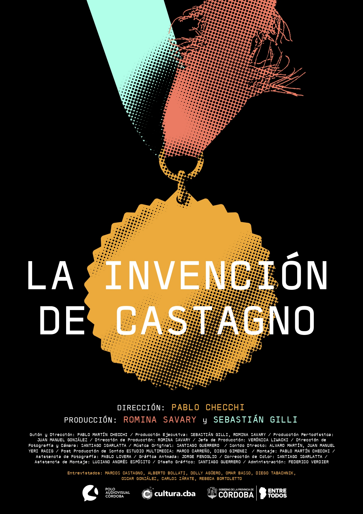
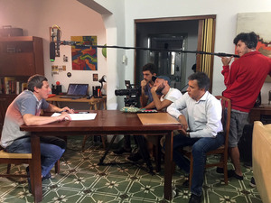
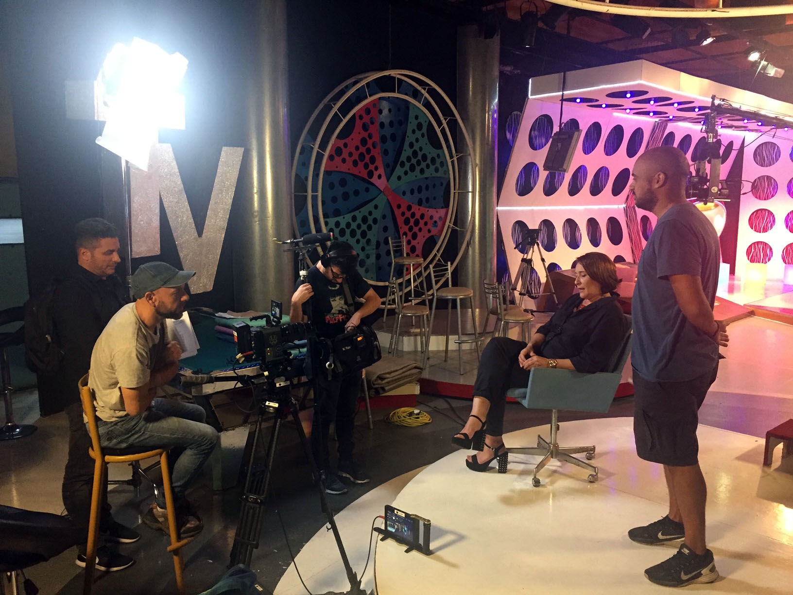

La Invención de Castagno




Año 2000: un joven estudiante universitario dice haber sido galardonado como "El Estudiante del Siglo" al inventar una expendedora de café que responde a comandos de voz. Rápidamente se transforma en una celebridad en su pueblo; pero la noticia trasciende a medios provinciales y nacionales; hasta que llega a reunirse con el gobernador.
20 años después cuenta cómo llegó a engañar a todos con la excusa de lograr una beca que le permitiera seguir estudiando; pero su ambigüedad lo sigue mostrando como un personaje difícil de descifrar.
Largometraje Documental
Año de producción: 2021
Estado: Distribución
Producción: Sebastián Gilli, Romina Savary, Pablo Martín Checchi.
Guión y Dirección: Pablo Martín Checchi
Dirección de Producción: Romina Savary
Dirección de Fotografía y Cámara: Santiago Sgarlatta
Música: Santiago Guerrero
Sonido Directo: Alvaro Martín, Juan Manuel Yeri Racig
Post Producción de Sonido: Estudio Multimedia / Marco Carreño, Diego Gimenez